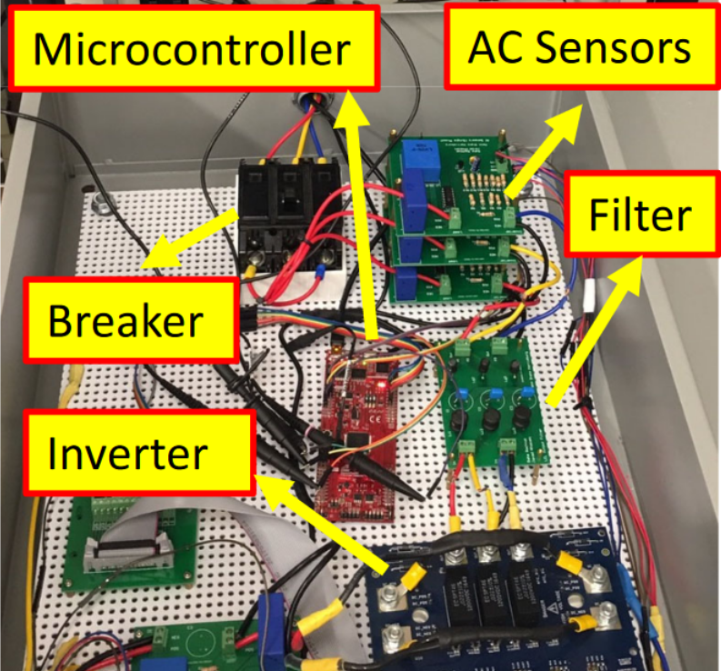

The classical task assignment problem can be applied to various real-world applications. However, in many applications agents are not guaranteed to complete their assigned task 100% of the time and agents might become faulty during task execution, requiring one to reassign agents to tasks. In this work, we consider how to maximize the probability that all tasks are completed while considering the probability that an agent could fail during task execution.
Bio
Hello, my name is Jonathan Diller!
I am a Ph.D. student in Robotics at Colorado School of Mines. I am a member of the Pervasive Computing Systems (PeCS) research group, working under Dr. Qi Han. I completed a master's degree in Computer Science at Colorado School of Mines in 2022 and a bachelor's degree in Computer Science with minors in Mathematics and Mechatronics Technologies at Penn State Harrisburg. Prior to starting postsecondary education, I served in the United States Marine Corps for five years.
In my free time I enjoy skiing, golfing, hiking, and playing video games. I'm also an avid traveler and love to explore new places and try new foods.
Research
My research is in planning and tasking for multi-robot teams and autonomous agents. A common theme in my work is incorporating realistic models of the world into planning algorithms. Examples include energy consumption and communication models that are based on experimental work.
Current Research
My current work is focused on task assignments that account for potential failures and building a robust drone testbed for evaluating algorithms.
In this project, we study how to effectively deploy a team of UAVs to collect data from wireless sensors. We seek to combine offline planning with online decision making that can be validated through both simulations and physical testbed evaluations.

This project studies how to enable mobile agents to avoid malicious communication jamming through mapping techniques. We look at networked ground robots operating around WiFi jammers as our motivating application.
In many UAV applications, it is more advantageous for a UAV base station to move to a new location after launching UAVs as opposed to remaining in the same position while the UAV performs some given task. In this project we are looking at how to plan UAV routes that minimize mission completion time while accounting for a moving base station. We also consider the relationship between UAV speed and power consumption and look at how scheduling speed can effect route planning.
Previous Projects
This project looked at how to integrate communication and control in swarms of UAVs. We used the NEAR-Shoemaker mission as a motivating case study and looked at how using a swarm of small satellites could be used to optimize the quantity and quality of data collected from the asteroid Eros.

This work proposed a hardware implementation of demand side management (DSM) on an actual microgrid system to support grid needs. We proposed an algorithm for achieving DSM through load-leveling at the micro-level and implemented it on a physical microgrid. We conducted a simulated case study, based on the electrical load needs of small communities in Bangladesh, to demonstrate how our algorithm can be used to better balance electrical load demands.

This work looked at how to implement Sinusoidal Pulse width modulation (sPWM) for single-phase and three-phase silicon carbide (SiC) converters using digital signal processing boards from Texas Instruments. We implemented our sPWM signal for SiC converters on a C2000 F28069M LaunchPad development kit and used it on a 3.5 kW three-phase SiC inverter experimental setup to validate the three-phase sPWM implementation.

Publications
Journal Papers
J. Diller, and Q. Han. "Energy-Aware Drone Path Finding with a Fixed-Trajectory Ground Vehicle." Journal on Autonomous Transportation Systems (2025).[classroom-use]
Conference Papers
J. Diller, Q. Han, R. Byers, J. Dotterweich, and J. Humann. "Hitchhiker's Guide to Patrolling: Path-Finding for Energy-Sharing Drone-UGV Teams." Accepted to the 24th International Conference on Autonomous Agents and Multiagent Systems (AAMAS), 2025. [paper][code]
C. Wang, J. Diller, and Q. Han. "LLM for Generating Simulation Inputs to Evaluate Path Planning Algorithms." In Proceedings of the 2024 International Conference on Machine Learning and Applications (ICMLA), 2024. [paper]
J. Diller, P. Hall, and Q. Han. "Holistic Path Planning for Multi-Drone Data Collection." In Proceedings of the 19th Annual International Conference on Distributed Computing in Smart Systems and the Internet of Things (DCOSS-IoT), 2023.
J. Diller, N. Dantam, J. Rogers, and Q. Han. "Communication Jamming-Aware Robot Path Adaptation." In Proceedings of the Second Workshop on Distributed Collective Intelligence (DISCOLI), 2023.
P. Hall, J. Diller, A. Moon. and Q. Han. "DroNS-3: Framework for Realistic Drone and Networking Simulators." In Proceedings of the Ninth Workshop on Micro Aerial Vehicle Networks, Systems, and Applications, 2023. [code]
J. Diller and Q. Han. "Energy-aware UAV Path Planning with Adaptive Speed." In Proceedings of the 22nd International Conference on Autonomous Agents and Multiagent Systems (AAMAS), 2023.
J. Diller, P. Hall, C. Schanker, K. Ung, P. Belous, P. Russell, and Q. Han. "ICCSwarm: A Framework for Integrated Communication and Control in UAV Swarms." In Proceedings of the Eighth Workshop on Micro Aerial Vehicle Networks, Systems, and Applications, pp. 1-6, 2022.
J. Diller, P. Idowu, and J. Khazaei. "Load-Leveling Trainer for Demand Side Management on a 45kW Cyber-Physical Microgrid." In 2020 IEEE Texas Power and Energy Conference (TPEC), 2020.
J. Diller, B. Trussell, J. Khazaei, and P. Idowu. "Hardware Development of a Sinusoidal PWM on a Three-phase 3.5 Kw SiC Converter." In 2020 IEEE Texas Power and Energy Conference (TPEC), 2020.
Extended Abstracts
J. Diller. "Planning and Coordination for Unmanned Aerial Vehicles." Presented at the International Conference on Autonomous Agents and Multiagent Systems' Doctoral Consortium, 2023. [abstract]
J. Diller, Q. Han, C. Dreyer, F. Rossi, S. Bandopadhyay, J.P. de la Croix, A. Rahmani, P. Clark. "Integrated Communication and Controls for Swarms of Small Satellites." Presented at the Inter-Planetary Small Satellite Conference, 2021. [abstract]